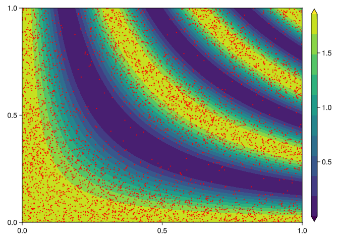
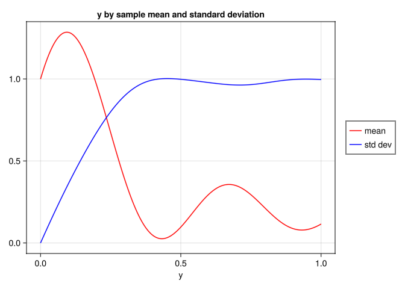
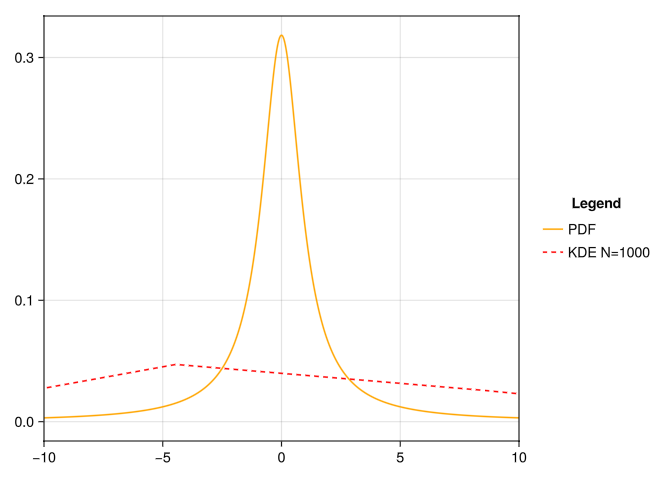
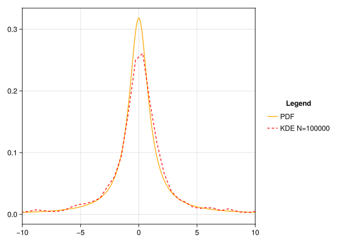

![]()
using GLMakie
using QuadGK
# cumulative trapazoidal rule
function cumsumtrap(f::Function, x)
y = f.(x)
N = length(x)
x1 = @view x[1:N-1]
x2 = @view x[2:N]
y1 = @view y[1:N-1]
y2 = @view y[2:N]
integral = cumsum(((x2.-x1).*(y1.+y2))./2.0)
integral ./= integral[end]
return [0; integral]
end
# CDF inverse sampler
function sampleInverseCDF(x::Float64, points::Matrix{Float64})
idx = findfirst(points[:, 1] .> x)
if idx === nothing
p1 = points[end-1, :]
p2 = points[end, :]
elseif idx == 1
p1 = points[1, :]
p2 = points[2, :]
else
p1 = points[idx-1, :]
p2 = points[idx, :]
end
liy(x, p1, p2)
end
# Linear Interpolator
function liy(x::Float64, p1::Vector{Float64}, p2::Vector{Float64})
x1, y1 = p1
x2, y2 = p2
if isapprox(x1, x2, atol = 1e-12)
return (y1 + y2) / 2.0
end
return y1 + (x - x1)*(y2 - y1)/(x2 - x1)
end
# Sine Integral
function Si(x::Float64)
return x == 0.0 ? 0.0 : quadgk(t -> sin(t)/t, 0.0, x, rtol=1e-3)[1]
end
# joint PDF for problem 2 p(x, y)
function p(x::Float64, y::Float64)
if x < 0.0 || y < 0.0
return 0.0
end
return ((40.0)/(Si(20.0) + 20.0))*cos(10.0*x*y)*cos(10.0*x*y)
end
# Conditional PDF p(x | y)
function pxGy(x::Float64, y::Float64)
denom = (20.0*y+sin(20.0*y))
if abs(denom) < 1e-6
return 0.0
end
return (40.0*y*cos(10.0*x*y)*cos(10.0*x*y))/denom
end
# Conditional PDF p(y | x)
function pyGx(x::Float64, y::Float64)
denom = (20.0*x+sin(20.0*x))
if abs(denom) < 1e-6
return 0.0
end
return (40.0*x*cos(10.0*x*y)*cos(10.0*x*y))/denom
end
# Mesh of the surface of the joint PDF
function getSurface()
xs = LinRange(0, 1, 100)
ys = LinRange(0, 1, 100)
zs = [p(x, y) for x in xs, y in ys]
return xs, ys, zs
end
# gibbs sampler
function gibbsSample(N::Integer)
samples = Matrix{Float64}(undef, N, 2)
r = LinRange(0.0, 1.0, 1000)
# initialize random x1
y0 = rand()
samples[1, 1] = sampleInverseCDF(rand(), hcat(cumsumtrap(x -> pxGy(x, y0), r), r))
for i=2:N
samples[i-1, 2] = sampleInverseCDF(rand(), hcat(cumsumtrap(y -> pyGx(samples[i-1, 1], y), r), r))
samples[i, 1] = sampleInverseCDF(rand(), hcat(cumsumtrap(x -> pxGy(x, samples[i-1, 2]), r), r))
end
samples
end
# Part B problem solution
function partb(N::Integer)
fig = Figure()
ax = Axis(fig[1,1])
xs, ys, zs = getSurface()
co = contourf!(ax, xs, ys, zs,
extendlow = :auto,
extendhigh = :auto)
samples = gibbsSample(N)
scatter!(ax, samples[:, 1], samples[:, 2], markersize = 3, color = :red)
Colorbar(fig[1, 2], co)
save("q2partb.png", fig)
end
partb(5000);Homework 2
Question 1
Problem definition
Consider the random variable: \[\begin{align} Y = \sum_{j = 1}^{n}b_jX_j \end{align}\]
where at least one \(b_j\) is non-zero, and \((X_1, ..., X_n)\) are jointly Gaussian random variables with mean \(\mathbf{\mu} = (\mu_1, ..., \mu_{n})\) and convergence matrix \(\mathbf{\Sigma}\).
Part A
Show that \(Y\) is a Gaussian random variable.
The characteristic function of a jointly Gaussian random variable:
\[\begin{align}
\phi_X(t) = e^{it^T\mu - \frac{1}{2} t^T\Sigma t}
\end{align}\]
Let \(\mathbf{B} = \left[b_1, b_2, ..., b_n\right]^T\) such that \(Y = \mathbf{B^T X} = b_1x_1 + b_2x_2 + ... + b_nx_n\).
Let us find the characteristic function of \(Y\):
\[\begin{align}
\phi_Y(t) &= \mathbb{E}\left[e^{it \sum_{j=1}^{n}b_j X_j}\right]\\
&= \phi_X(tb_1, tb_2, ..., tb_n) \\
&= e^{it\left(B^T \mu\right) - \frac{1}{2} t^2 \left(B^T \Sigma B\right)}
\end{align}\]
Thus \(Y\) is a normally distributed Gaussian random variable via its characteristic function.
Part B
Compute the mean and variance of \(Y\) as a function of \(\{b_j\}\), \(\mathbf{\mu}\) and \(\mathbf{\Sigma}\)
From the characteristic function in part A, we can see that the mean and variance of \(Y\) is given as:
\[\begin{align} \mathbb{E}\left[Y\right] &= B^T \mu \\ \ \\ \mathbb{E}\left[Y^2\right] - \mathbb{E}\left[Y\right]^2 &= B^T \Sigma B \end{align}\]
Question 2
Problem definition
Consider the two-dimensional random vector \(\mathbf{X} = \left[X_1, X_2\right]\) with joint PDF
\[ p(x_1, x_2) = \begin{cases} K\cos^2{(10x_1x_2)} & (x_1, x_2) \in \left[0, 1\right] \times \left[0,1\right] \\ 0 & \text{otherwise} \end{cases} \tag{1}\]
where
\[\begin{align} K = \frac{40}{Si(20) + 20} \quad , \quad Si(x) = \int_{0}^{x} \frac{\sin{(t)}}{t} dt \end{align}\]
Part A
Compute the conditional PDFs \(p(x_1 | x_2)\) and \(p(x_2 | x_1)\).
Let us compute the conditional probability of \(p(x_1|x_2)\)
\[\begin{align} p(x_1 | x_2) &= \frac{p(x_1, x_2)}{p(x_2)} \\ &= \frac{p(x_1, x_2)}{\int_{-\infty}^{\infty} p(x_1, x_2) dx_1} \\ &= \frac{K\cos^2{(10x_1x_2)}}{K\int_{0}^{1} \cos^2{(10x_1x_2)} dx_1} \\ &= \frac{K\cos^2{(10x_1x_2)}}{\frac{K}{10x_2}\int_{0}^{10x_2}\cos^2{(u)}du} \\ &= \frac{K\cos^2{(10x_1x_2)}}{\frac{K}{10x_2}\left[\frac{1}{2}\left(u + \sin{(u)}\cos{(u)}\right)\right]_{0}^{10x_2}}\\ &= \frac{K\cos^2{(10x_1x_2)}}{\frac{K}{40x_2}\left(2u + \sin{(2u)}\right)\bigg{|}_{0}^{10x_2}} \\ &= \frac{40x_2\cos^2{(10x_1x_2)}}{20x_2 + \sin{(20x_2)}} \end{align}\]
By taking the integral with respect to \(x_2\) we have that \[p(x_1) = K\left(\frac{\sin{(20x_1)}}{40x_1} + \frac{1}{2}\right)\]
thus the conditional probabilities are: \[\begin{align} p(x_1 | x_2) &= \frac{40x_2\cos^2{(10x_1x_2)}}{20x_2 + \sin{(20x_2)}} \\ \ \\ p(x_2 | x_1) &= \frac{40x_1\cos^2{(10x_1x_2)}}{20x_1 + \sin{(20x_1)}} \end{align}\]
Part B
Write a computer code that samples the PDF of (Equation 1) using the gibbs sampling algorithm. Plot the PDF and the samples you obtain from the Gibbs algorithm on a 2d contour plot, similarly to Figure 3 in the course note 2.

Part C
Write a program to calculate the sample mean and sample standard deviation of the random function
\[f(y;X_1, X_2) = \sin{(4 \pi X_1 y)} + \cos{(4 \pi X_2 y)} \quad y \in [0,1] \tag{2}\]
where \(X_1\) and \(X_2\) are random variables with joint PDF given by (Equation 1).
function f(y::Float64, X1::Float64, X2::Float64)
return sin(4*π*X1*y) + cos(4*π*X2*y)
end
function partc()
N = Int64(5e4)
M = Int64(500)
r = LinRange(0.0, 1.0, M)
fig = Figure()
grid = fig[1, 1] = GridLayout()
ax = Axis(grid[1, 1],
title = "y by sample mean and standard deviation",
xlabel = "y")
samples = Matrix{Float64}(undef, N, M)
for i=1:N
X1, X2 = gibbsSample(2)[:, 1]
for j=1:M
samples[i, j] = f(r[j], X1, X2)
end
end
μᵢ = vec(sum(j -> j, samples, dims=1) ./ N)
μₜ = sum(μᵢ) / M
σᵢ = vec(sqrt.(sum((samples .- μᵢ') .^ 2, dims = 1) ./ (N - 1)))
means = lines!(ax, r, μᵢ, color = :red)
stdv = lines!(ax, r, σᵢ, color = :blue)
Legend(fig[1, 2], [means, stdv], ["mean", "std dev"])
save("q2partc.png", fig)
end
partc();
Question 3
Problem definition
Write a computer code that estimates the PDF of the random variable
\[\bar{X}_N = \frac{X_1 + ... + X_N}{N} \quad \text{sample mean} \tag{3}\]
where \(\{X_j\}\) are independent identically distributed Cauchy random variables with PDF
\[\begin{equation} p_{X_j}(x) = \frac{1}{\pi (1 + x^2)} \quad j = 1, ..., N \end{equation}\]
using the inverse CDF function and relative frequency approach you developed in HW1.
Plot your results for \(N = 10^3\) and \(N = 10^5\).
Solution
Let us find the inverse cdf of the cauchy distribution:
\[\begin{align} F(x) = \frac{1}{\pi} \int_{-\infty}{x}\frac{1}{(1 + y^2)}dy &= \frac{1}{\pi}\left[\arctan{(y)}\bigg{|}_{-\infty}^x\right] \\ &= \frac{1}{\pi}\left[\arctan{(x)} - \arctan{(-\infty)}\right] \\ \end{align}\]
\[\begin{align} F^{-1}(x) = \tan{(\pi(x - \frac{1}{2}))} \end{align}\]
using KernelDensity
function PDF(x::Float64)
return 1.0 / (π*(1+x^2))
end
function inverseCDF(x::Float64)
return tan(π*(x - 0.5))
end
function question3(N::Integer)
samples = Vector{Float64}(undef, 1000)
for j in eachindex(samples)
s = Vector{Float64}(undef, N)
for i in eachindex(s)
s[i] = inverseCDF(rand())
end
samples[j] = sum(s) / Float64(lastindex(s))
end
fig = Figure()
ax = Axis(fig[1, 1])
k = kde(samples)
r = LinRange(-10.0, 10.0, 1000)
lines!(ax, r, PDF.(r), color = :orange, label = "PDF")
lines!(ax, k.x, k.density, color = :red, label = "KDE N=$N", linestyle = :dash)
xlims!(ax, -10, 10)
fig[1, 2] = Legend(fig, ax, "Legend", framevisible = false)
save("question3_$(N).png", fig)
end
question3(1000);
question3(100000);
